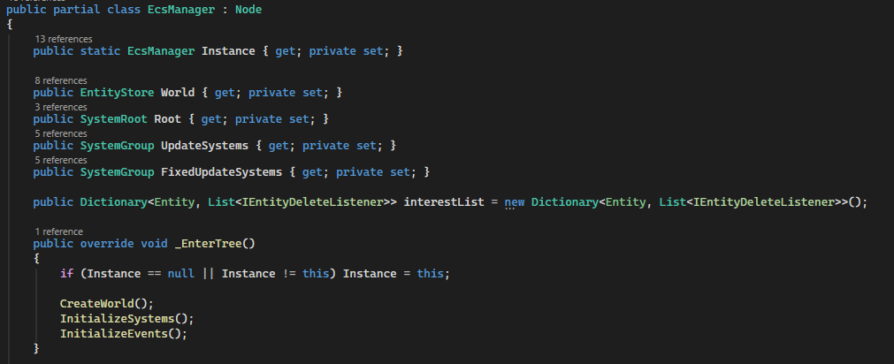
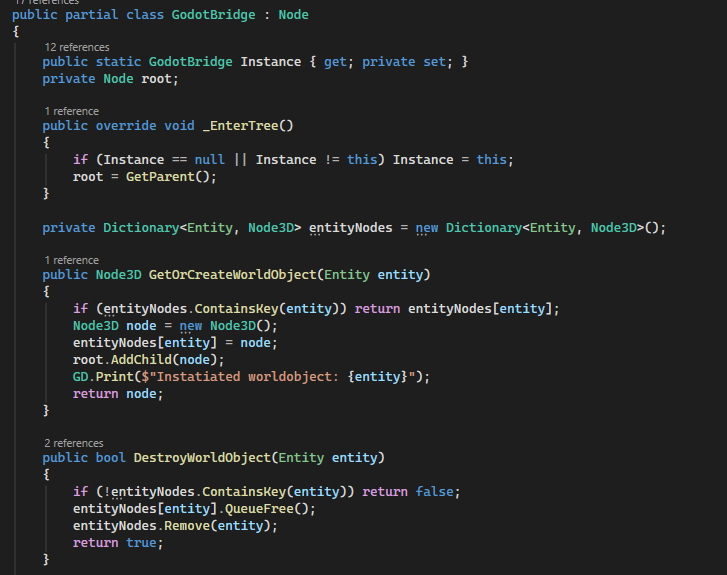
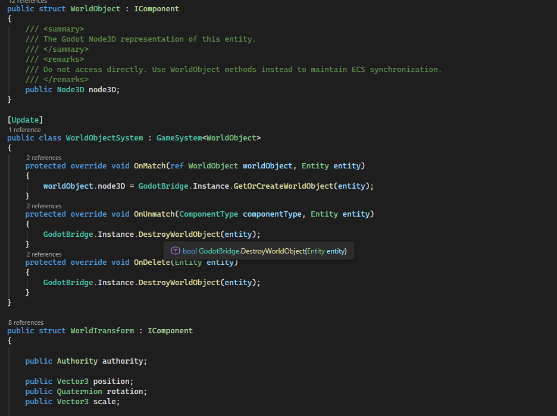

Author Arcana is a game project, however as of currently there is very little game.
The plan for Author Arcana is to integrate ECS architecture into Godot for multiple reasons
This page shows some of the ideas behind it

This screenshot shows some of the ECS manager, which is responsible for effectively "putting the ECS" into godot

This screenshot shows some of the Godot bridge, which provides functions for the ECS side to do stuff in godot
It is inteded for game content to use as little of godot as possible, where mostly just basic components such as WorldObject do so

This screenshot shows some of the core components, this file contains all the core components required for a game to function such as merly representing an object
You can see the WorldObject in particular here which is required for anything to be created in Godots hierarchy